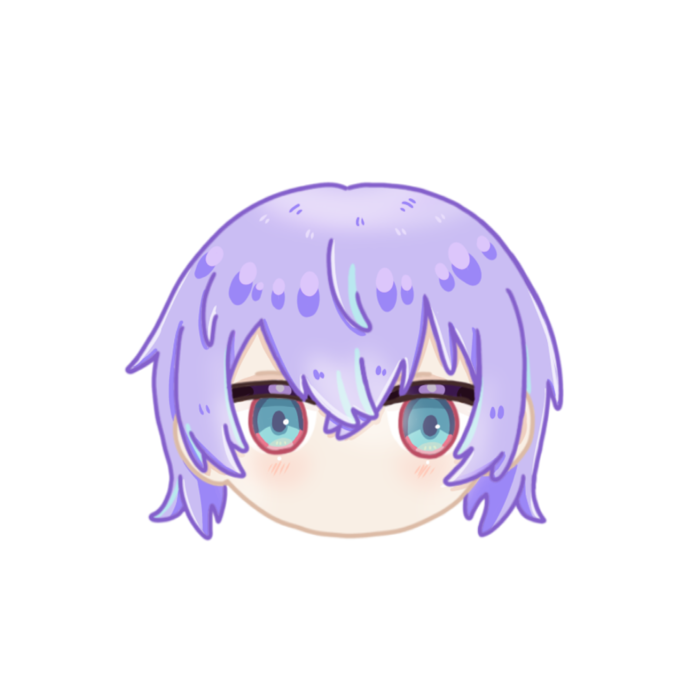
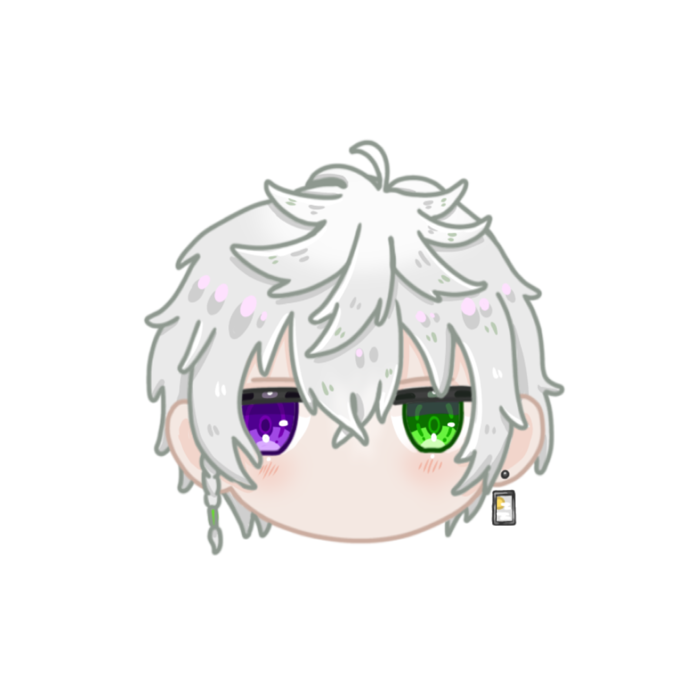
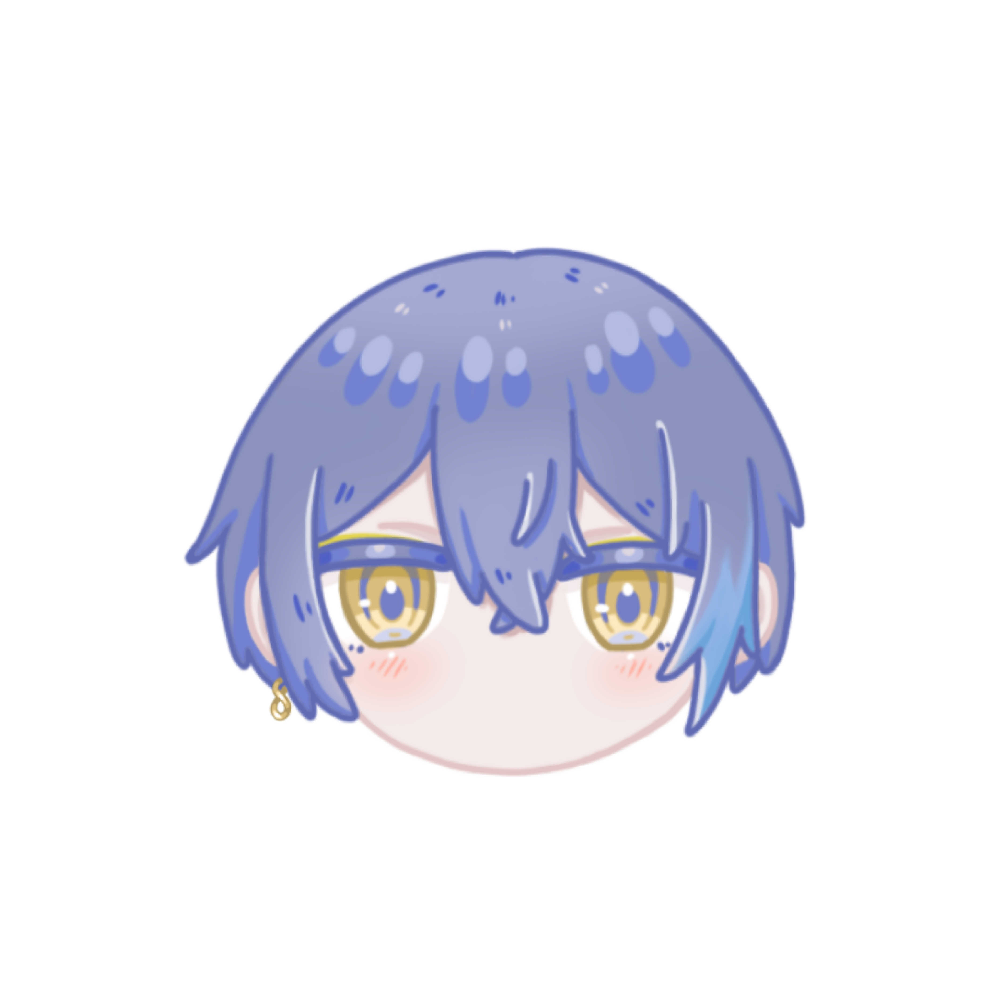
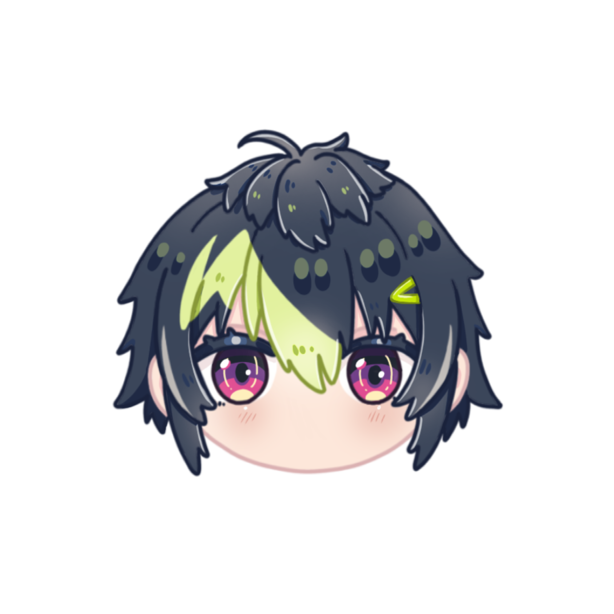

在某座島國西側，各個部落形成在鬱鬱蔥蔥的森林深處，英雄通過個人能力對抗敵人。
為了調查真相四位英雄——Dytica！正暗中活躍！

雖然什麼都看，卻什麼都不明白的鑑定師。因試圖接納宇宙萬物，結果連自己的來歷都搞不清楚了。
なんでも見るが、なんにも分からない鑑定士。宇宙の全てを受け入れようとした結果、自分自身の素性もわからなくなってしまった。

隱居於偏僻村落的忍者集團中的王牌。據傳他能在水面上奔跑，能從懷中取出梯子，還能穿牆而過。他不只精通苦無與手裡劍，對各類武器也樣樣在行。
人里離れた村の忍者集団のエース。水上を走り、懐から梯子を出し、壁を抜けると噂される。クナイや手裏剣に留まらず、あらゆる武器の扱いに長ける。

一位斬妖除魔、冷酷無情的劍士。外表雖冷峻，實則性格懶散；休息日里，他常悠閒地與オトモ玩耍。這頭白狼本性懶怠，但其真實身份，是某個暗殺集團的首領。
魔を裂き、妖を切る冷酷な剣士。見かけによらずぐうたらした性格で、休みの日はのんびりオトモと遊んでいる。基本めんどくさがり屋な白狼だが、裏の顔はとある暗殺集団の首領。

出於對機械的濃厚興趣，他成為了英雄們的機械師。後來，他將這些技術加以運用，自己也搖身一變成為了英雄。讓他煩惱的是，由於所處環境的緣故，他製造的機械往往不被他人理解。
機械いじりの趣味が高じて、ヒーローたちのメカニックを務めることに。さらにその技術を転用して、自分もヒーローになってしまった。場所柄あまり作った機械が理解されないのが悩み。